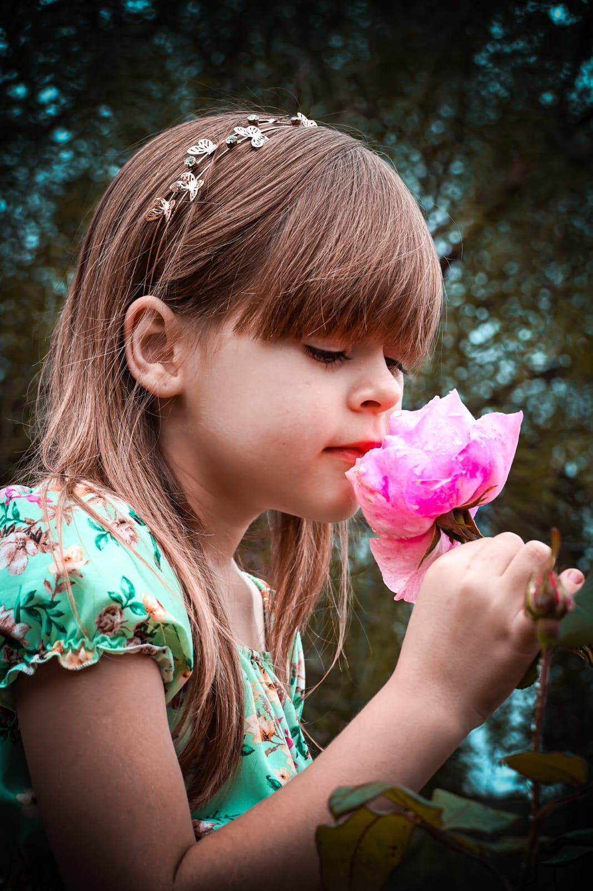
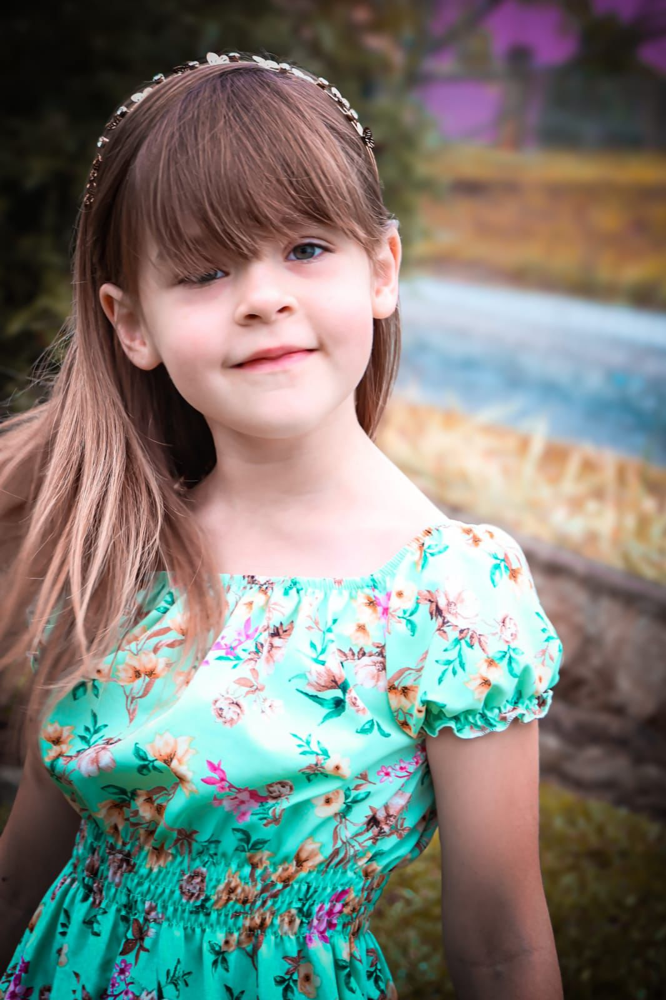
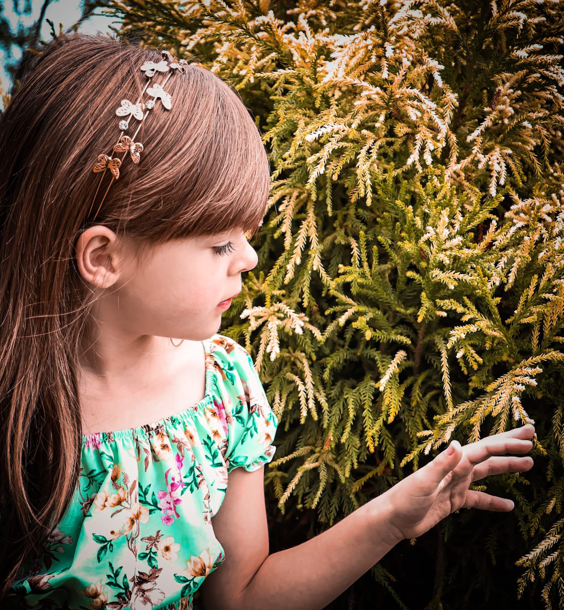
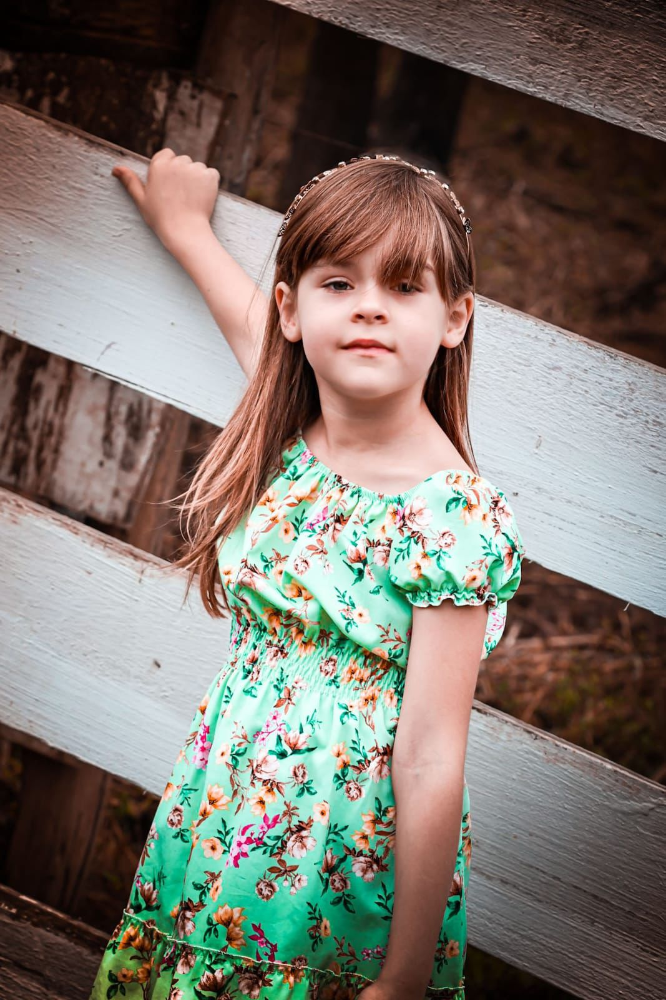

Fotografia que transforma momentos em memórias.
Ensaios externos com um olhar leve, elegante e natural. Cada fotografia é criada para contar sua história de forma única.
Agendar Ensaio
Ensaios externos com um olhar leve, elegante e natural. Cada fotografia é criada para contar sua história de forma única.
Agendar Ensaio

Olá! Sou Mariane, fotógrafa apaixonada por registrar momentos verdadeiros. Meu objetivo é criar imagens delicadas, naturais e cheias de emoção, valorizando cada detalhe e transformando lembranças em algo que poderá ser revivido para sempre. Atendo na região de Rio Claro do Sul – Mallet/PR, realizando ensaios externos com luz natural.
Ensaios elegantes para eternizar essa fase especial.
Registros delicados da espera mais importante da vida.
Fotografias espontâneas e cheias de sentimento.
Momentos naturais ao lado de quem você ama.
Fotos autênticas que mostram sua personalidade.
Cobertura de eventos pequenos e comemorações.






📍 Rio Claro do Sul – Mallet/PR
📷 Ensaios externos
15 anos • Gestante • Casais • Família • Lifestyle • Eventos pequenos